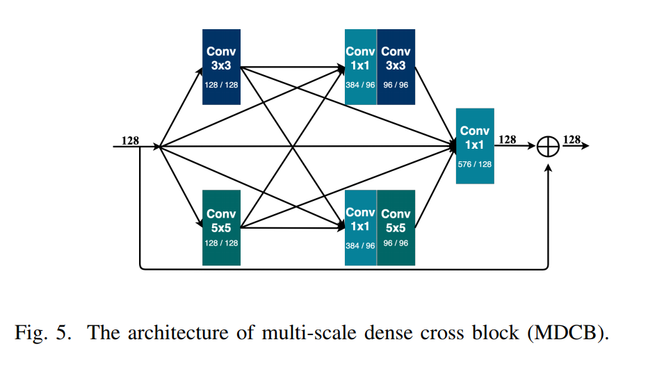
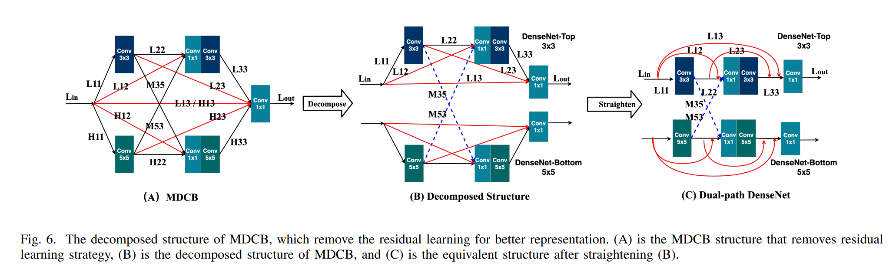
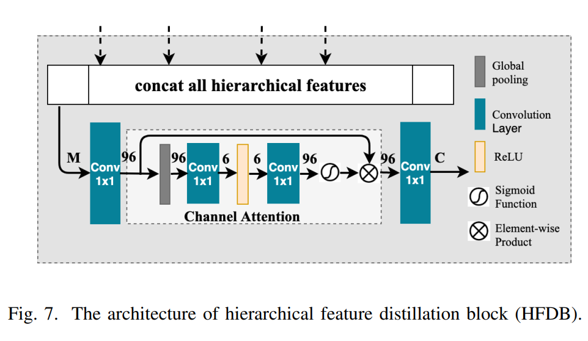
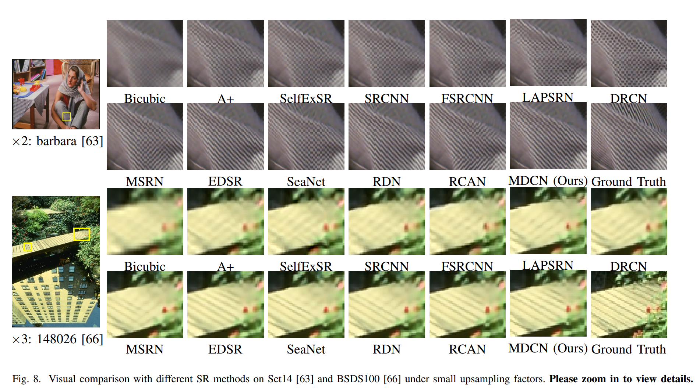
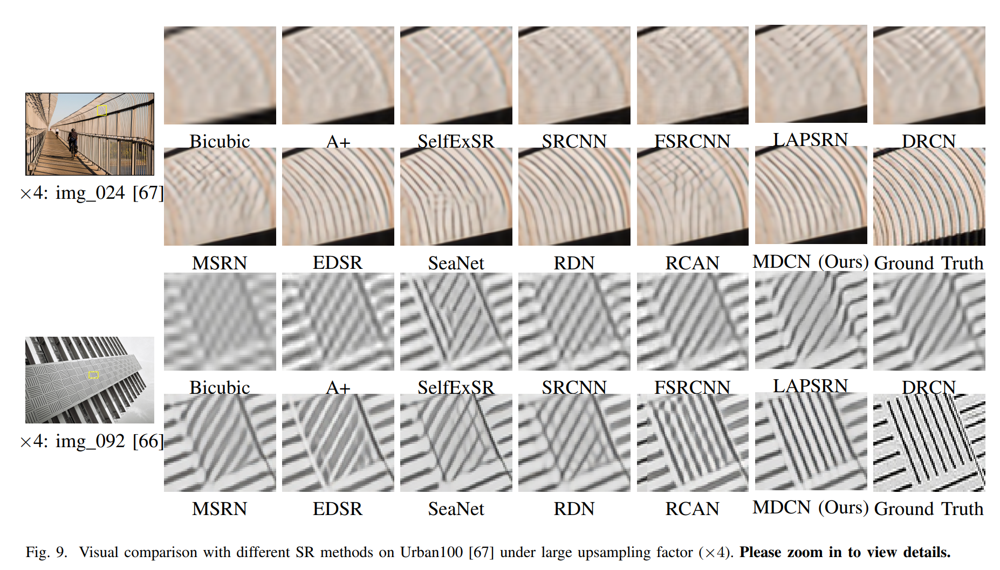
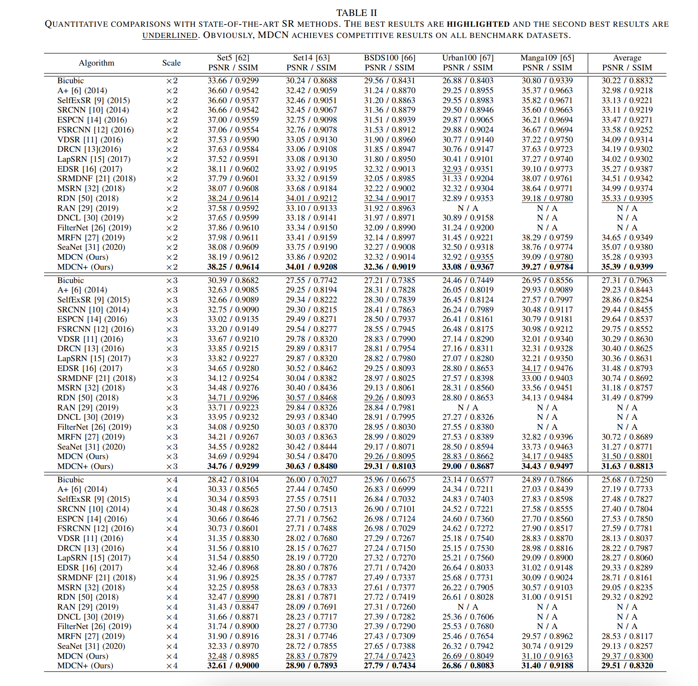
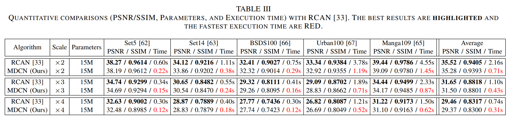

MDCN: Multi-scale Dense Cross Network for Image Super-ResolutionJuncheng Li1 Faming Fang1 Jiaqian Li1 Kangfu Mei2 Guixu Zhang11 East China Normal University 2 The Chinese University of Hong Kong (Shenzhen)Contact us: cvjunchengli@gmail.con |
Abstract
IConvolutional neural networks have been proven to be of great benefit for single-image super-resolution (SISR). However, previous works do not make full use of multi-scale features and ignore the inter-scale correlation between different upsampling factors, resulting in sub-optimal performance. Instead of blindly increasing the depth of the network, we are committed to mining image features and learning the interscale correlation between different upsampling factors. To achieve this, we propose a Multi-scale Dense Cross Network (MDCN), which achieves great performance with fewer parameters and less execution time. MDCN consists of multi-scale dense cross blocks (MDCBs), hierarchical feature distillation block (HFDB), and dynamic reconstruction block (DRB). Among them, MDCB aims to detect multi-scale features and maximize the use of image features flow at different scales, HFDB focuses on adaptively recalibrate channel-wise feature responses to achieve feature distillation, and DRB attempts to reconstruct SR images with different upsampling factors in a single model. It is worth noting that all these modules can run independently. It means that these modules can be selectively plugged into any CNN model to improve model performance. Extensive experiments show that MDCN achieves competitive results in SISR, especially in the reconstruction task with multiple upsampling factors.
MDCN is an improved version of our previous work MSRN.
MDCN
|
|  |
|  |
|  |
Visual Results
|  |
|  |
PSNR/SSIM Results
|  |
|  |
Downloads
| Paper | : [ TCSVT_MDCN.pdf ] |
| Experimental results | : [ MDCN_SR_Images.zip ] |
| Pre-trained model | : [ TCSVT2020_MDCN_premodel.zip ] |
| Source Code. | : [ Code ] |
BibTex